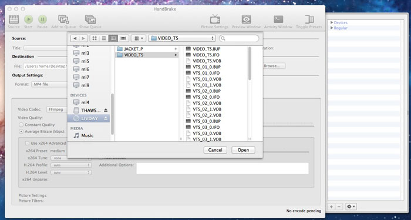
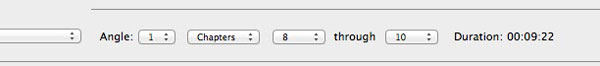

A. Insert DVD
B. Quit DVD Player
C. Ripping the DVD
D. Converting (Skip if your video is .mp4)
E. Import your video into Pro Tools
- Figure out the scene number(s) you need
B. Quit DVD Player
C. Ripping the DVD
- Open Handbrake
- Select your DVD
- Choose the “VIDEO_TS” folder 
- Click Open
- Select the chapter(s) your scene is in. 
- Press Start
- Your video will be created on the desktop
D. Converting (Skip if your video is .mp4)
- Open Encoder
- Drag and drop your video into the Queue Pane
- Click the yellow link below “Preset” in the Queue Pane
- Change the format to H.264
- Click OK
- Click the play button
E. Import your video into Pro Tools